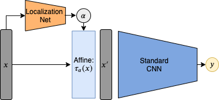
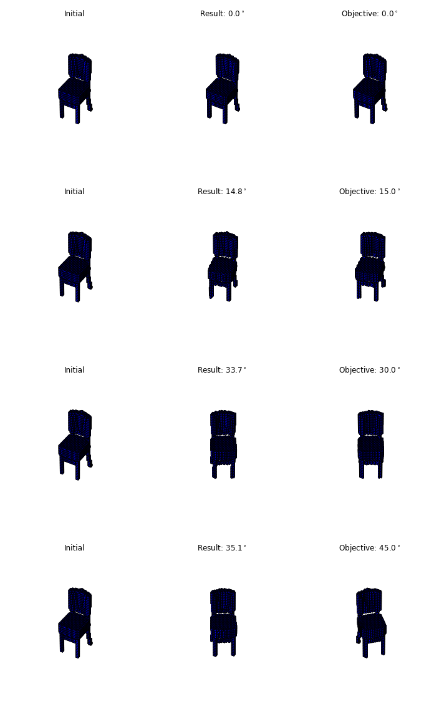

Open Research 7: Differentiable Affine Transforms
Differentiable 3D Affine Transforms
Affine transforms were made popular for deep learning in Spatial Transformer Networks, where they introduced an affine transform layer with to transform an image to some cannonical orientation before it was processed by the network. The parameters of the affine transform would be generated by another network, a localization net, that would take the original image as input, and output the 6 parameters of the affine transform.

The interesting part was that the transform was made differentable using bilinear sampling, so it could be trained along with the rest of the network using gradient descent.
For this work I’ll be using variational autoencoders instead of standard CNNs, and 3D instead of 2D transforms. Before we start with this, we should check if these affine transforms can actually be optimized with gradient descent.
Optimizing 3D Affine Transforms with Gradient Descent
Gradient descent has no guarantees of finding a global minimum, so we should do some empirical tests to see when this works, or when a bad local minima is reached. Given an object, $x$, and an affine transformed version of this object, $x_\alpha$, we would like to minimize the mean squared error between $x$ and $x_\alpha$, by applying an affine transform to $x$.
The solution is straightforward, given an affine transform $\alpha$, we could take the matrix inverse $\alpha^{-1}$. In this case we are testing how well the differentiable optimization works, so will optimize an affine transform $\tau_\alpha$, and evaluate how close the local minima reached is to the global optima: $$\arg\min_\alpha |(x_\alpha-\tau_{\alpha}(x))|$$
We tested this for rotations, translations, and rotations + translations.
We found for rotations, the global optima can be reached for roations around $15^\circ$ for simple objects like a dresser (basically a cube), but this is less consistent with more complex objects like a chair or desk. Rotations of over $45^\circ$ rarely find the global optimia for any object:
| Object | $15^\circ$ mse | $30^\circ$ mse | $45^\circ$ mse |
|---|---|---|---|
| Sofa | 3.2 | 13.2 | 30.3 |
| Dresser | 3.6 | 15.6 | 36.0 |
| Night stand | 5.5 | 25.6 | 64.2 |
Translations seem to be easier to optimize, and translations of $20%$ of the with can be optimized nearly perfectly. Rotations + translations was extremely difficult, and any substantial rotation + translation meant that frequently the global optima wasn’t reached, even for simple objects.
For this reason we will have to incorporate random restarts into the optimization process, because gradient descent alone frequently is caught in local minima when optimizing affine transforms.
Below are some examples of a chair at different rotations, and the orientation the optimization ended at: 